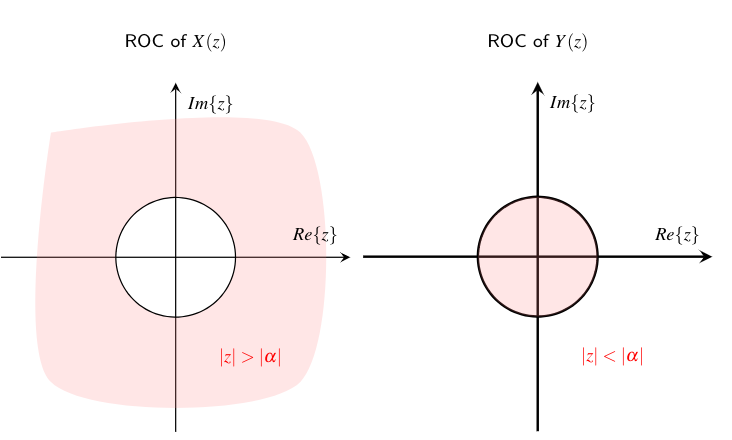
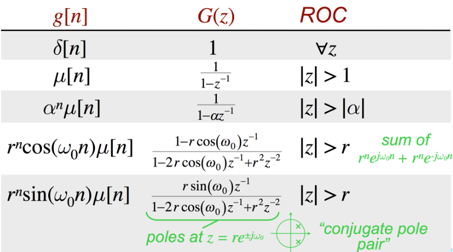

5. Z变换¶
序列$x[n]$的DTFT变换定义为
$$ X(e^{j\omega}) = \sum_{n=-\infty}^\infty x[n] e^{-j\omega n} $$
当序列$x[n]$满足绝对可和或者平方可和条件的时候，它的DTFT变换$X(e^{j\omega})$存在（收敛）。【参考一致收敛和均方收敛的定义】
所以在实际的应用中，直接使用DTFT变换来分析系统的性能，若系统的冲激响应序列的DTFT变换不存在，就无法对该系统进行分析。所以，Z变换将DTFT变换进一步扩展，定义如下
$$ X(z) = \sum_{n=-\infty}^\infty x[n] z^{-n} $$
其中$z\in \mathbb{C}$是复数变量。因此，可以令$z=r\cdot e^{j\omega}$，带入上式就能得到如下形式
$$ X(z) = X(r \cdot e^{j\omega}) = \sum_{n=-\infty}^\infty x[n] r^{-n} e^{-j\omega n} $$
可以发现，这个公式实际上是对序列$x[n]\cdot r^{-n}$ 的DTFT变换。特别的，当$r=1$时，z变换与DTFT变换等价。进一步分析，即使序列$x[n]$不满足绝对可和条件，对于z变换，我们仍然可以通过引入不同的$r$使得$x[n]\cdot r^{-n}$满足绝对可和条件，使其z变换仍然存在。
z变换是离散时间傅立叶变换的一种推广形式，该变换是复变量z的函数。有很多序列的DTFT变换不存在，而它的z变换存在。相比较DTFT变换，z变换在分析离散时间系统的过程中更加方便。
5.1. 几何解释：z平面¶
![\begin{axis}[xtick = \empty,ytick = \empty,xmax = 3, xmin = -3, ymax = 3, ymin = -3, xlabel = {\tiny $Re\{z\}$},ylabel = {\tiny $Im\{z\}$},height= .6\textwidth,width = .6\textwidth,thick,axis line style = {->},axis lines = center,clip=false]
\addplot [samples=100,domain=0:2*pi] ({cos(deg(x))},{sin(deg(x))});
\addplot [samples=100,domain=0:2*pi] ({cos(deg(x))},{sin(deg(x))});
\draw[-latex] (axis cs:0,0) -- (axis cs: {cos(60)},{sin(60)});
\draw[thick] (axis cs:0.2,0) arc (0:60:0.2) node at (axis cs: {0.4*cos(30)},{0.4*sin(30)}) {\tiny $\omega$};
\node at (axis cs:-1,1.3) {\color{blue} unit circle};
\node [pin=80:{\tiny $\color{blue} z=e^{j\omega}$}] at (axis cs:0.4,0.9) {};
\end{axis}](_images/tikz-19b432138e0b494335c5a718cceedfbd51152d9d.png)
z平面
如图所示，z平面以复变量$z$的实部和虚部为两个坐标轴的坐标平面，表示全复域所有的可能取值。那么，当复变量的幅度$r=1$时，对应于这个坐标平面（z平面）上的单位圆。同时，当$r=1$时，z变换等效于DTFT变换。所以，我们通常说DTFT变换对应于z平面上的单位圆。
5.2. 收敛域¶
同DTFT变换一样，z变换是定义在负无穷大到正无穷大的求和形式，所以序列的z变换可能不收敛。对于任意序列，其z变换存在的z的取值区间，我们称之为该序列z变换的收敛域，简称ROC（Region of Convergence）。
考虑具体形式，序列$x[n]$的z变换为
$$ X(z) = \sum_{n=-\infty}^\infty x[n] z^{-n}= \sum_{n=-\infty}^\infty x[n] r^{-n} e^{-j\omega n} $$
显然，当序列$x[n] r^{-n}$满足绝对可和条件的时，上述求和公式一定收敛。
例题： 求因果序列$x[n]=\alpha ^ n \mu [n]$的z变换及其收敛域。
解： 根据z变换定义可以得到
$$ X(z) = \sum_{n=-\infty}^\infty \alpha^n \mu [n] z^{-n} = \sum_{n=0}^\infty \alpha ^n z^{-n} $$ 当$\alpha$的幅度小于1时，上述等比数列求和收敛 $$ X(z) = \frac{1}{1-\alpha z^{-1}}, \quad \vert \alpha z^{-1} \vert <1 $$
因此该序列z变换的收敛域ROC为$|z| >|\alpha|$.
结合z平面，我们可以将收敛域在z平面中展示出来，如下左图所示的半径为$|\alpha|$的圆外。

例题： 求如下反因果序列$y[n] = \alpha^n \mu[-n-1]$的z变换及其收敛域。
$$ \begin{split} Y(z) &= \sum_{n=-\infty}^{-1}\alpha^{n} z^{-n} = \sum_{m=1}^{\infty}\alpha^{-m} z^{m} \\ &{= \alpha^{-1}z \sum_{m=0}^{\infty}\alpha^{-m} z^{m}} {=\frac{\alpha^{-1}z}{1-\alpha^{-1}z}} \\ &{=\frac{1}{1-\alpha z^{-1}},} \quad {\left\vert \alpha^{-1}z\right\vert<1} \end{split} $$ 而该序列z变换的收敛域ROC为$|z|<|\alpha|$，收敛域在z平面中的区域为如右图所示的半径为$|\alpha|$的圆内。
可见，对于完全不同的两个序列，他们z变换的形式可能完全一样 $$ \begin{split} x[n]=\alpha^n \mu[n] &\longleftrightarrow \color{red} X(z)=\frac{1}{1-\alpha z^{-1}},\\ y[n]=-\alpha^n \mu[-n-1]&\longleftrightarrow \color{red} Y(z)=\frac{1}{1-\alpha z^{-1}} \end{split} $$ 但是，二者的收敛域是不同的。z变换的收敛域（Region of Convergence）在Z变换中非常重要，是序列z变换的一部分。同时，z变换的收敛域如果包含单位圆，也就是说当复变量$z$的幅度$r=1$时，$X(z)$依然收敛。此时，$X(z)$等价于该序列的DTFT变换，因此可以证明该序列的DTFT变换也收敛，或者说DTFT变换存在。例如，对于上述两个例子，若$\alpha$的幅度小于1，那么因果序列$x[n]$的DTFT变换存在；而当$\alpha$的幅度大于1，则非因果序列$y[n]$的DTFT变换存在。那么，序列的DTFT变换是否也会像z变换一样，两个不同序列的DTFT变换具有相同的形式呢？答案是否定的。这是因为，具有相同形式z变换的两个序列，在一种条件下，只可能有一个序列的DTFT变换存在。
另一方面，令复变量$z=re^{j\theta}$，考虑z变换z变换的收敛条件 $$ \begin{split} |X(z)| &= \left| \sum_{n=-\infty}^\infty x[n] z^{-n} \right| \leq \sum_{n=-\infty}^\infty |x[n]|r^{-n} \\ & = \sum_{n=-\infty}^{-1} |x[n]|r^{-n} + \sum_{n=0}^{\infty} |x[n]|r^{-n}\\ & = \sum_{n=1}^\infty |x[-n]|r^{n} + \sum_{n=0}^\infty \frac{|x[n]|}{r^{n}} \end{split} $$
上面的推导结果可以发现，z变换的收敛域只和复变量z的幅度相关，而与它的相位角无关。这就决定了，z变换的收敛域往往都是一个环形区域。
5.3. 常用序列的z变换¶
